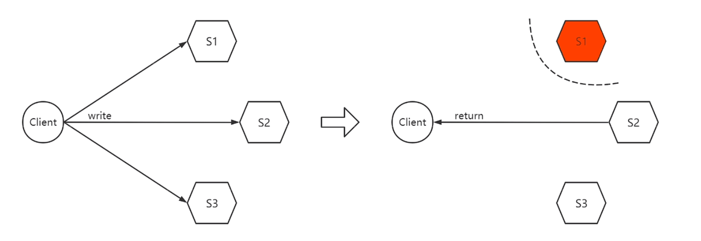
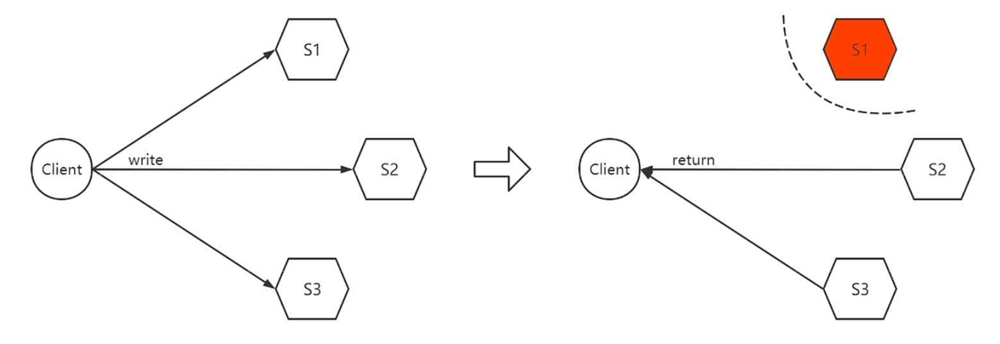

Ch01-CAP
May 2, 2018
CAP 理论是加州理工大学伯克利分校的 Eric Brewer 教授在 2000 年 7 月的 ACM PODC 会议上首次提出的，它是 Eric Brewer 在 Inktomi 期间研发搜索引擎、分布式 Web 缓存时得出的关于数据一致性（C：Consistency）、服务可用性（A：Availability）、分区容错性（P：Partition-tolerance）的一个著名猜想：
It is impossible for a web service to provide the three following guarantees : Consistency, Availability and Partition-tolerance.
在这个猜想提出的 2 年以后，来自麻省理工学院的 Seth Gilbert 和 Nancy Lynch 从理论上证明了 Eric Brewer 教授的 CAP 猜想是成立的，从此，CAP 理论在学术上正式成为了分布式领域公认的定理，并深刻影响着分布式系统的发展。
CAP 理论告诉我们，一个分布式系统不可能同时满足数据一致性、服务可用性和分区容错性这三个基本需求，最多只能同时满足其中的两个。
1. 基本概念 #
| 特性 | 说明 |
|---|---|
| 一致性 (C) | 等同于所有节点访问同一份的最新副本 |
| 可用性 (A) | 每次请求都能获取到非错的响应，但不保证获取到的数据为最新的数据 |
| 分区容错性 (P) | 尽管任意数量的消息被节点间的网络丢失或延迟，系统仍然能正常工作 |
1.1 一致性 #
常见的一致性有 强一致性（Strong Consistency）、弱一致性（Weak Consistency）、最终一致性（Eventual Consistency）。在 CAP 中特指强一致性。
1.2 ACID 与 CAP 中 C 的区别 #
CAP 中的 C 侧重于一条数据在多副本中的一致性，而 CAP 中的 C 侧重于多条数据在总数上的一致性。
- CAP 中的 C 就像是用户 A 有 100 块钱被银行存储在北京，然后数据会被同步到深圳，不管是从北京取还是深圳取，都是这 100 块钱。银行需要保证这 100 块钱同步正确。
- ACID 中的 C 就像是用户 A 有 100 块钱，要转账给用户 B，那么需要保证 A 少了 100 块钱，B 多了 100 块钱。银行需要保证这一系列过程和最终结果是正确的。
2. 举例说明 #

在 1 写的情况下，只要一个副本写入成功即可返回写入成功。
出现网络分区后，三台机器的数据就可能出现不一致，无法保证 C；但是因为可以正常写入所以返回写入成功，A 依旧可以保证。

在 3 写的情况下，需要 3 个副本全部写入成功才可返回写入成功。
出现网络分区后，无法保证 3 个副本全部写入成功，所以无法保证 A；但是保证了 C。
3. 常见指标 #
分布式系统中 P 是一定存在，一旦出现了网络分区，那么一致性和可用性就必须抛弃一个。常见的，对于 NoSQL 数据库更加注重可用性，所以一般是一个 AP 系统；对于分布式关系型数据库更加注重一致性，所以一般是一个 CP 系统。
不过凡事无绝对，即便是分布式关系型数据库系统，对于 A 也有要求，虽然达不到 100%，但是依然可以具备 n 个 9 以上的高可用能力。因此分布式关系型数据库系统也可以看做 CP+HA的系统。
| 指标 | 全称 | 说明 |
|---|---|---|
| RPO(Recovery Point Objective) | 恢复点目标 | 数据库在灾难后会丢失多长时间的数据 |
| RTO(Recovery Time Objective) | 恢复时间目标 | 指数据库在灾难发生后到整个系统恢复正常所需要的时间 |
4. 一些分布式方案 #
4.1 Quorum Replication #
N (副本数)，W（写入成功副本数），R（读取成功副本数）
一般需要 W + R > N
- N = 3, W = 1, R = 3（写 AP，读 CP）
- N = 3, W = 3, R = 1(写 CP，读 AP)
4.2 Consensus algorithm #
leader 提供读写，leader 宕机后选择新的 leader，只有选举期间短暂的不可用
- CP + HA